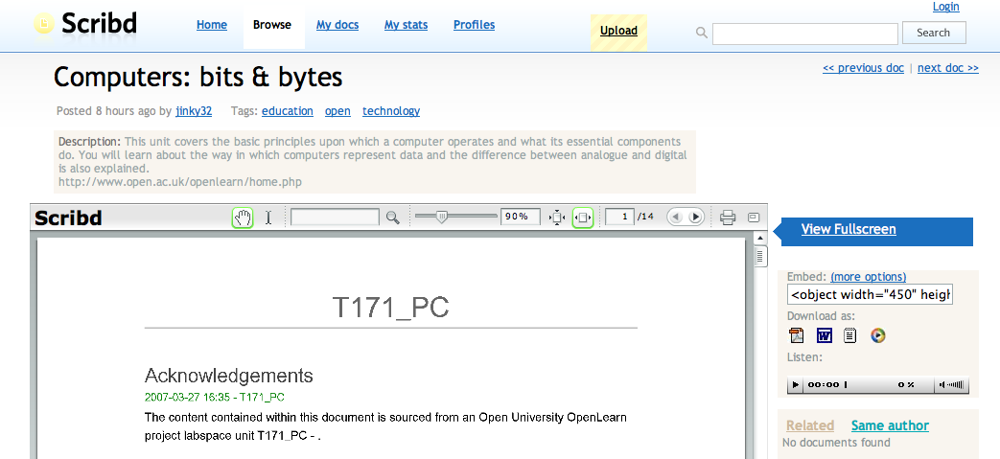

A quick ack to Stuart Brown who's picked up the 'so what can we do with these here OpenLearn content RSS feeds then?' baton and started running like crazy with it...
Today was a heads up to T171 on Scribd. The route to this upload was an xfruits RSS2PDF conversion. Of course, now the content is in Scribd, it's available as a Word doc (just need the bookmarklet now to open this into Zoho ot Google docs...).

Scribd also offers an audio version of the file, supposedly, but all I get is 'dash dash dash...'
Anyway, that's not really a problem because Stuart also tried the feed in VocalFruits and he mentioned it worked okay (public feeds aren't available yet).
Stuart's also been trying feeds out in various mobile browsers/feed readers, like the (secret) Grazr one and - err - a couple of others I cant find the links to, offhand... I'm not sure if he's tried it out inthe mobile Netvibes feed reader though (how contrived was that link?!).
Just by the by, the OU has been looking at an XML to whatever production route fro several years now (and I believe have something available that's pretty reliable - at least, for documents written using the OU XML schema (which I guess is pretty close to the one used to release LabSpace XML).
The ad hoc, multi-format publication route described above is probably brittle as anything, but I reckon I could produce readable PDFs, Word docs, MP3s, RTFs, mobile browseable, widget readable versions of any text/image based OpenLearn content in at most an hour or two. Such is the good enough nature of - and widespread support for - RSS...
I'm sure LTS can also do the 'publish in any format' trick, far more reliably, and in a much shorter time than I can, too... (wanna race? ;-) But maybe the point is that it's not that clever in design terms (that is, almost anyone can use a variety of third party tools to achieve a similar effect), it's achieving the required reliability and scaleability that takes the effort.
Finally for today, another weak link: for readers who've been tinkering with OpenLearn materials, maybe even playing with some of the OpenLearn course content feeds, there's a call just gone out for the openlearn 2007 conference, taking place on 30-31 October 2007 in Milton Keynes.
The conference is free if you register in time and promise to talk, so I'm thinking maybe I should try and submit something...
Posted by ajh59 at March 28, 2007 12:34 AM